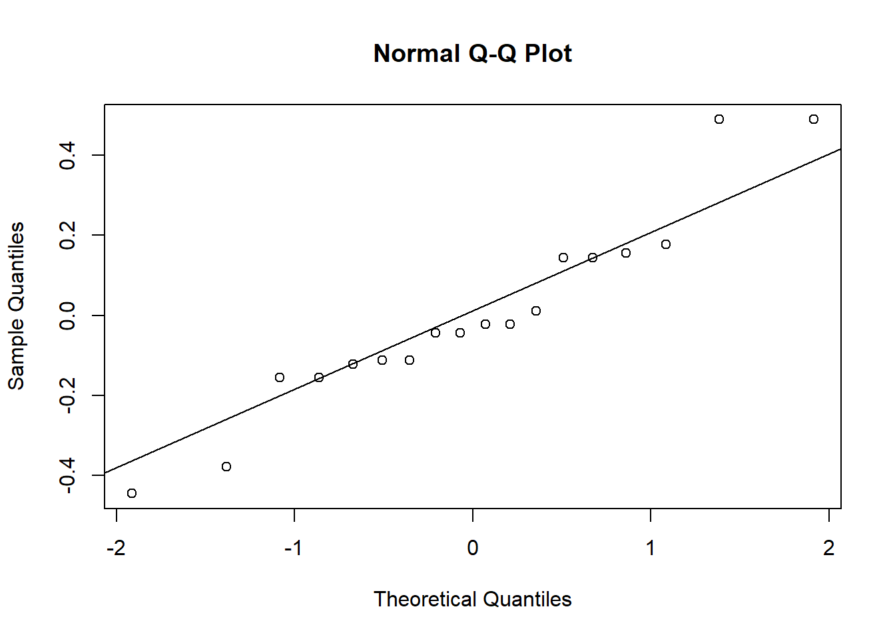
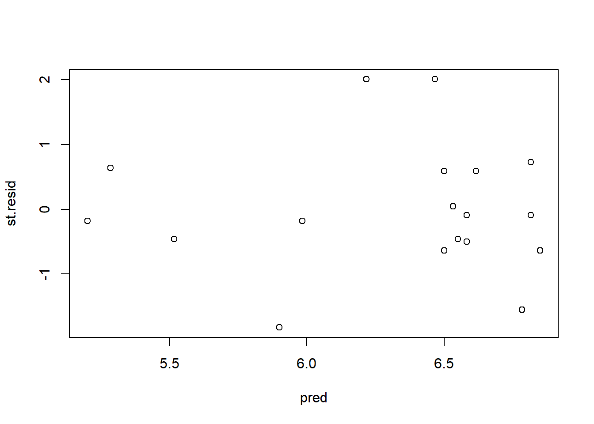

Plantear adecuadamente los componentes del modelo matemático de un diseño en parcelas divididas aplicado a un DCA y a un DBCA.
Desarrollar destrezas técnicas en el manejo de software estadístico para el análisis de datos experimentales.
Realizar el analisis estadistico de un diseño en parcelas divididas para un DCA y un DBCA. Interpretar y comunicar correctamente los resultados del analísis estadístico.
Evaluar la confiabilidad de los resultados experimentales.
1.2 INTRODUCCION
Este tipo de diseño fue desarrollado en 1925 por el matemático Ronald Fisher para su uso en experimentos agrícolas. El diseño de parcela dividida se usa comúnmente cuando hay dos o más factores de interés, donde un factor se aplica a unidades experimentales completas (parcelas principales) y el otro factor se aplica a subunidades más pequeñas dentro de las parcelas principales (subparcelas). La principal ventaja del diseño de parcelas divididas es su capacidad para asignar recursos de manera eficiente mientras se acomodan las limitaciones prácticas del experimento.
Los diseños de parcelas divididas tienen dos ventajas sobre los diseños completamente al azar:
Costo: dado que uno de los factores no tiene que cambiarse para cada parcela dividida, esto significa que este tipo de diseno tiende a ser más barato de llevar a cabo en la práctica.
Eficiencia: conduce a un aumento en la precision de las estimaciones para todos los efectos de los factores excepto para los efectos principales de la parcela completa.
Regla General:
Un factor es facil de cambiar o variar.
Un factor es dificil de cambiar o variar.
1.3 EJEMPLO 9 ~ VARIEDADES Y FECHAS DE SIEMBRA
Se realizó un experimento para comparar el rendimiento de dos variedades de arroz (A y B) sembradas en dos parcelas diferentes. Dentro de las parcelas se hicieron subparcelas para comparar el efecto de tres fechas de siembra sobre la producción de arroz y se consideraron tres bloques, teniendo en cuenta la pendiente del suelo. Los datos se presentan a continuación1:
Bloque I
Bloque II
Bloque III
Variedad A
VariedadB
Variedad A
Variedad B
Variedad A
Variedad B
F1
5.0
F3
6.5
F1
5.4
F2
6.5
F3
6.6
F1
6.5
F2
5.3
F1
6.7
F3
6.4
F3
6.6
F1
5.6
F2
6.6
F3
6.8
F2
6.8
F2
5.9
F1
6.8
F2
6.9
F3
6.8
1.3.1 OBJETIVO
Comparar el rendimiento de dos variedades de arroz en distintas fechas de siembra.
1.3.2 ALEATORIZACION
En un primer paso, se aleatorizó las parcelas principales a los bloques.
En un segundo paso, se aleatorizó las subparcelas dentro de cada parcela.
1.3.3 UNIDADES EXPERIMENTALES
En este diseño se tiene dos tipos de unidades experimentales:
Para las parcelas las unidades experimentales son las áreas de tierra donde se siembran las variedades de arroz.
Para las subparcelas son las subáreas dentro de las parcelas donde se asignan las fechas de siembra.
1.3.4 UNIDADES DE OBSERVACION
Cada planta de donde se obtiene el valor del rendimiento para una combinación variedad-fecha.
1.3.5 VARIABLE RESPUESTA
Rendimiento de arroz.
1.3.6 DISEÑO
Diseño en Parcelas Divididas aplicado a un DBCA.
Parcela o parcela principal (PP): variedades de arroz (A y B).
Subparcela o parcela secundaria (SP): fechas de siembra (F1, F2 y F3).
Bloques: tipos de pendientes en el suelo (I, II, III).
library(dplyr)library(ggplot2)datos %>%ggplot(aes(x = var, y = rend, fill = fecha)) +geom_boxplot() +labs(x ="Variedad de arroz", y ="Rendimiento", fill ="Fecha de siembra") +ggtitle("Variedades de arroz segun fecha de siembra") +theme_minimal()
\mu es la media general. \alpha_i es el efecto del i-ésimo nivel del factor A o parcela (variedad). \delta_k es el efecto del bloque k (pendiente) \eta_{(i)k} es el error aleatorio de la parcela. (tambien llamado error A). Siendo \eta_{(i)k} \sim N(0, \sigma^2) \beta_j es el efecto del j-ésimo nivel del factor B o subparcela (fecha de siembra). \alpha\beta_{ij} es la interaccion entre los dos factores (parcela-subparcela). \epsilon_{ijk} es el error aleatorio de la subparcela (tambien llamado error B). Siendo \epsilon_{ijk} \sim N(0, \sigma^2)
1.3.10 HIPOTESIS DE ANALISIS
Hipotesis a plantear:
Parcelas principales
H_0: No existen diferencias entre los efectos de la parcela principal vs. H_1: Existen diferencias entre los efectos de la parcela principal.
Sub parcelas
H_0: No existen diferencias entre los efectos de la subparcela vs. H_1: Existen diferencias entre los efectos de la subparcela.
Interacción PP : SP
H_0: No existen diferencias entre los efectos de la interacción parcela:subparcela vs. H_1: Existen diferencias entre los efectos de la interacción parcela:subparcela
1.3.11 ANOVA
Code
# aplicar el modelo planteadomodelo=aov(rend~bloque+var*fecha+Error(bloque:var),datos)summary(modelo)
Error: bloque:var
Df Sum Sq Mean Sq F value Pr(>F)
bloque 2 0.3233 0.1617 0.848 0.541
var 1 1.9339 1.9339 10.149 0.086 .
Residuals 2 0.3811 0.1906
---
Signif. codes: 0 '***' 0.001 '**' 0.01 '*' 0.05 '.' 0.1 ' ' 1
Error: Within
Df Sum Sq Mean Sq F value Pr(>F)
fecha 2 1.143 0.5717 4.533 0.0483 *
var:fecha 2 1.274 0.6372 5.053 0.0381 *
Residuals 8 1.009 0.1261
---
Signif. codes: 0 '***' 0.001 '**' 0.01 '*' 0.05 '.' 0.1 ' ' 1
ANALYSIS SPLIT PLOT: datos$rend
Class level information
datos$var : A B
datos$fecha : F1 F2 F3
datos$bloque : I II III
Number of observations: 18
Analysis of Variance Table
Response: datos$rend
Df Sum Sq Mean Sq F value Pr(>F)
datos$bloque 2 0.32333 0.16167 NaN NaN
datos$var 1 1.93389 1.93389 10.1487 0.08601 .
Ea 2 0.38111 0.19056 NaN NaN
datos$fecha 2 1.14333 0.57167 4.5330 0.04829 *
datos$var:datos$fecha 2 1.27444 0.63722 5.0529 0.03812 *
Eb 8 1.00889 0.12611 NaN NaN
---
Signif. codes: 0 '***' 0.001 '**' 0.01 '*' 0.05 '.' 0.1 ' ' 1
cv(a) = 6.9 %, cv(b) = 5.6 %, Mean = 6.316667
Interaccion parcela-subparcela
Con un un p-valor menor a \alpha se rechaza la Ho.
Subparcela
Con un p-valor menor a\alpha se rechaza la Ho.
Parcela
Con un un p-valor mayor a \alpha no se rechaza la Ho.
Conclusión
Existen diferencias signicativas entre los efectos de parcela-subparcela (variedad-fecha de siembra). Es necesario validar el modelo para que la conclusión sea válida.
1.3.12 VERIFICACION DE LOS SUPUESTOS DEL MODELO
Los supuestos que se comprobaran son homogeneidad de varianzas y normalidad de residuos.
Graficamente
Code
# normalidad de residuos library(dae)residuos=residuals.aovlist(modelo)qqnorm(residuos);qqline(residuos)

Code
# homogenenidad de varianzaspred=fitted.values(modelo)st.resid=scale(residuos)plot(pred,st.resid)

Supuesto de normalidad. Test de Shapiro Wilks
Code
shapiro.test(resid(modelo))
Shapiro-Wilk normality test
data: resid(modelo)
W = 0.93438, p-value = 0.2317
El supuesto de normalidad se cumple.
Homogeneidad de Varianzas ~ Test de Levenne
Code
library(car)# crear el vector tratamientotrat=interaction(datos$var,datos$fecha)leveneTest(resid(modelo),trat,center = mean)
Levene's Test for Homogeneity of Variance (center = mean)
Df F value Pr(>F)
group 5 1.9747 0.1551
12
El supuesto de homogeneidad de varianzas se cumple.
1.3.13 CONCLUSIONES DEL MODELO PLANTEADO
Se concluye que los efectos de la interaccion variedad-fecha de siembra son significativos en el rendimiento de arroz (F_{(2, 8)}=5.05, p-value =0.03812) a un nivel de significacion de \alpha = 0.05. Se realizará pruebas de comparacion de medias post hoc para saber cual es el mejor tratamiento.
Nota: realizamos la conclusión final en base a la interacción porque este diseño busca estudiar esos efectos como objetivo principal.
$statistics
MSerror Df Mean CV MSD
0.126 8 6.316667 5.619495 1.058951
$parameters
test name.t ntr StudentizedRange alpha
Tukey var:fecha 6 5.167152 0.05
$means
rend std r Min Max Q25 Q50 Q75
A:F1 5.333333 0.3055050 3 5.0 5.6 5.20 5.4 5.50
A:F2 6.033333 0.8082904 3 5.3 6.9 5.60 5.9 6.40
A:F3 6.600000 0.2000000 3 6.4 6.8 6.50 6.6 6.70
B:F1 6.666667 0.1527525 3 6.5 6.8 6.60 6.7 6.75
B:F2 6.633333 0.1527525 3 6.5 6.8 6.55 6.6 6.70
B:F3 6.633333 0.1527525 3 6.5 6.8 6.55 6.6 6.70
$comparison
NULL
$groups
rend groups
B:F1 6.666667 a
B:F2 6.633333 a
B:F3 6.633333 a
A:F3 6.600000 a
A:F2 6.033333 ab
A:F1 5.333333 b
attr(,"class")
[1] "group"
No se presentan diferecias estadisticas entre las distintas fechas de siembra para la variedad B y la variedad A-fecha de siembra 3, siendo que éstas combinaciones presentan las mayores medias de rendimiento. La variedad A con las fechas de siembra 1 y 2, presentan las menores medias y se diferencian estadísticamente de las demás.
1.4 RECURSOS RECOMENDADOS
Bibliografia
Lawson, J. (2014). Design and Analysis of Experiments with R (Vol. 115). CRC press. Cap 8. Pags. 307-350. Disponible en: https://elearning.unite.it/pluginfile.php/221606/mod_resource/content/1/BookDOEwithR.pdf
Kuehl, R. (2001). Diseño de experimentos. 2da Edición. Pags. 481-469.
Melo, O., López, L. y Melo, S. (2020). Diseño de Experimentos. Pags. 518-524. Bogotá, Colombia
Quinteros, H. (1997). Diseño Experimental. Facultad de Ciencias Agrarias, Universidad Nacional de Jujuy. Pags. 110-126.
Footnotes
Tomado y adaptado de Melo et al. (2020) Diseño de Experimentos. Bogota, Colombia.↩︎